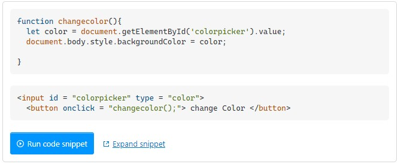
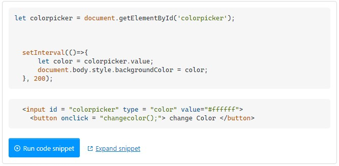
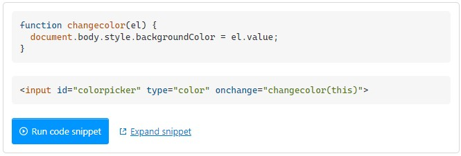
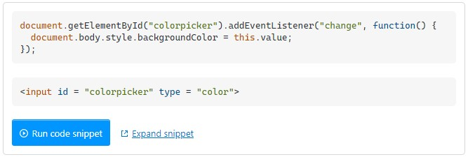

Benny Juni 21, 2021
Saya ingin mengubah warna latar belakang menggunakan colorpicker tanpa mengklik changecolor tombol. Yang saya inginkan adalah mengubah warna latar belakang saat saya memilih RGB di colorpicker.

Alhus Juni 23, 2021
Gunakan ini.

Andre Juni 24, 2021
Anda dapat menambahkan acara perubahan pada colorpicker Anda sehingga fungsi Anda akan dipanggil dan kemudian cukup ubah warna latar belakang Anda. Demo Code :

Ikhsan Juni 26, 2021

Replay